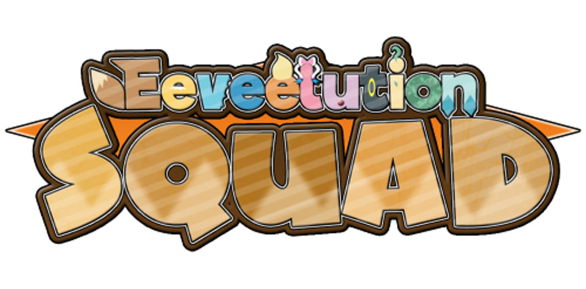
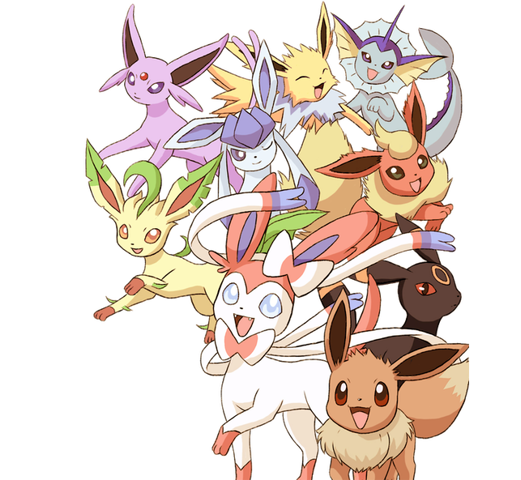

Conheça a
 EEVEE
Eevee é um dos pokémon mais populares entre os fãs, devido à sua capacidade de evoluir para muitas formas com diferentes tipos de pokémon. Conhecido como o "Pokémon Evolução" nos jogos e no anime, Eevee tem um código genético instável, o que lhe permite evoluir para um dos oito pokémon diferentes, conhecidos como Eeveelutions, dependendo da situação.

VAPOREON
Vaporeon é umas das evoluções de Eevee, do tipo água, introduzido na primera generação. Sua composição celular é semelhante às moléculas de água. Quando suas barbatanas começam a vibrar, é sinal que uma chuva está para cair. Ele pode fundir o seu corpo na água, ficando completamente invisível.

JOLTEON
Vaporeon é umas das evoluções de Eevee, do tipo água, introduzido na primera generação. Sua composição celular é semelhante às moléculas de água. Quando suas barbatanas começam a vibrar, é sinal que uma chuva está para cair. Ele pode fundir o seu corpo na água, ficando completamente invisível.
Desenvolvido por Start by Alura. Projeto fictício sem fins comerciais.